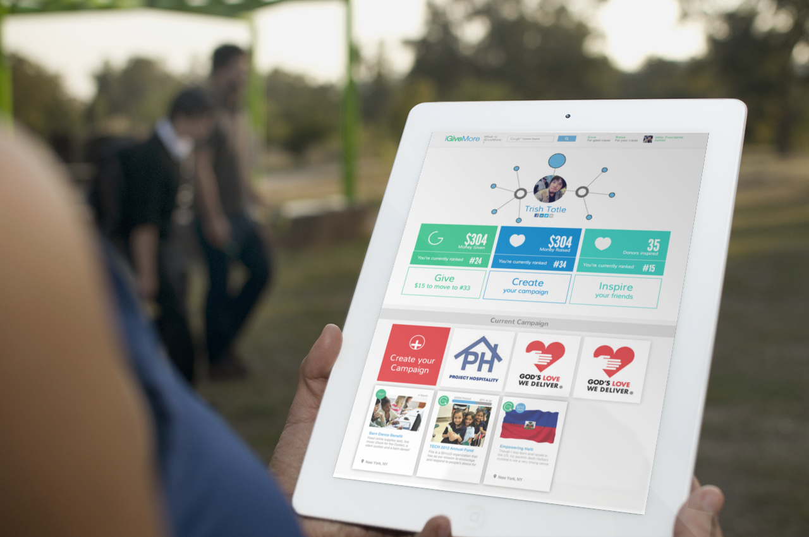
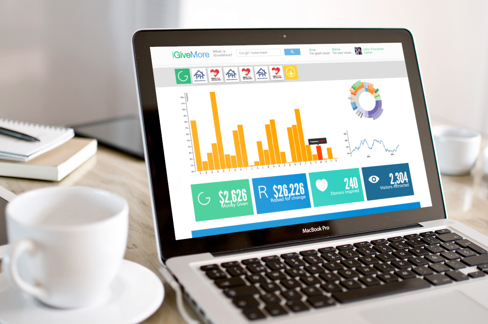

<div class="row">


	<div class="fr-work-text col-xs-12 col-md-4 col-md-push-8">
		<h3>{{page.title}}</h3>
		<h5>{{page.year}}</h5>
		<h6>{{page.tags}}</h6>
		{% if page.collab %}
		<h6> in collaboration with {{page.collab}}</h6>
		{% endif %}
		  
		<p>
			iGiveMore is a tech start up in New York City. We aim to create a system of service that encourage and incentivize charity giving through social networks for individual users. While also leverages non profits and fundraisers to reach out to wider audience. The data collected would also helps the brands to stragetise future campaign through analytics tools. Which is provided for paid subscription users. 
		</p>
		<p>
			The project is written in HTML/CSS/Javascript and front end part of Ruby on Rails.
		</p>

	</div>


	<div class="fr-work-img col-xs-12 col-md-8 col-md-pull-4">  

		
		

	</div>


</div>
{% include worktile.html %}